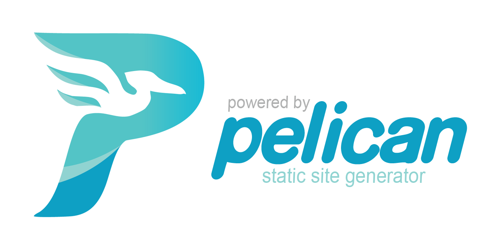

The answer is simple: I used Pelican. But what exactly is Pelican?

Pelican is a static site generator that allows you to create websites quickly and easily without needing to write HTML or CSS. Instead, you can choose from a variety of themes provided by the Pelican community. Pelican is …